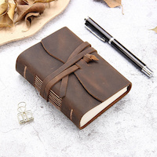

Create your memories and dive into adventure with a Traveling Journal
Subscribe to Our Emailing List for Inspirations, Information, and Offers
Handmade
Our journals are created with qualtiy handmade, luxurious leather covers that age beautifully with use and time. Smooth, creamy paper that is bleed-resistant, feather-resistant, and fountain pen friendly. All for creating a pleasant writing experience.
Customizable
Unleashe your creativity. The simple design of the journals make it so people can customize it the way they want. The Traveling Notebooks are designed to be customzied to you. Choose which notebooks go inside the leather cover. Pick your paper from grid, dotted, lined, or blank. Choose inserts such as pockets, dividers, and more. Please express yourself through this act of customizing. The more you use this journal, the more the colour and texture of the leather cover becomes profound. Through this change, you should see yourself being reflected on the notebook.
Pick Your Size / Travel
Two different sizes to choose from: large and pocket size. Take these journals with you no matter where you go. Whether you are documenting your travels, or being inspired by what you see, your journal is there for you. Notice how easy it is to carry this notebook in your hand. The sizes make it easy to slip maps and tickets you collect when you are traveling. We hope it tempts you to go traveling having this journal in your hand.
About the Traveling Journal
There is no better place to keep your memories than the Traveling Journal. This high-quality notebook features smooth, creamy paper and is encased in a handmade, luxurious leather cover that ages beautifully with use and time. With a variety of refill options and accessories, you can customize. These journals bring out inspiration and creativity. The anchor the wandering heart and follow where you lead.
Products

Day-Tripper Journal
This pocket sized journal is perfect for recording day trips. Easy to take with you so you can jot down your ideas and memories whenever your inspiration comes to you. Available in all colours.
Cross-Country Journal
Our medium sized journal is perfect to go with you where ever the road leads you. Comes with pocket compartments. Best for longer travels that take you days away from home. Available in all colours. Comes with 3 refillable notebooks, 2 section bands, and your choice of either a pocket, document slit, or pen holder.
World Traveler Journal
The World Traveler is our large-sized journal. Ready to travel the globe with you. Available in all colours. Comes with 3 refillable notebooks, 2 section bands, and your choice of 2 options: pocket, document slit, or pen holder.
A video on how to use the journal and inspire you.
Customer Reviews
Reviews